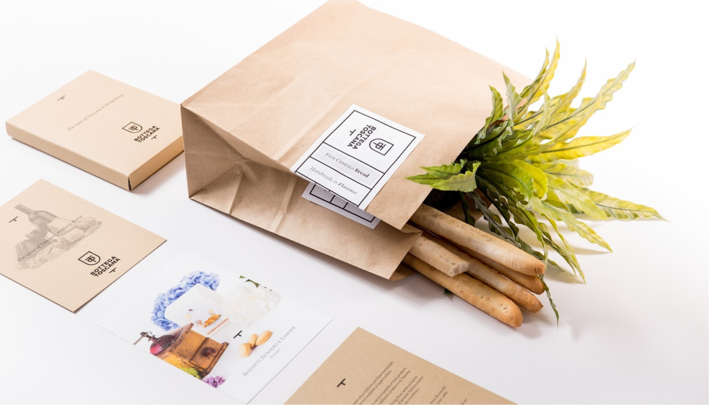

Лайфхаки
Экологичная упаковка
Упаковка играет важную роль в осознанном потреблении,
поскольку она имеет прямое влияние на экологический след
продуктов. При выборе товаров стоит отдавать предпочтение
товарам с минимальной и устойчивой упаковкой, такой
как биоразлагаемые материалы или переработанные упаковочные
материалы. Кроме того, можно рассмотреть возможность покупки
товаров в небольших количествах или покупку
в розничной таре для сокращения использования одноразовых
упаковок. Использование многоразовых сумок и контейнеров
также является эффективным способом сократить использование
пластиковых или бумажных пакетов.
Неправильно утилизированная пластиковая упаковка может привести
к серьезному загрязнению окружающей среды.
Мы подготовили для вас несколько лайфхаков, которые помогут
вам экологично пользоваться упаковкой.

 Cъедобная упаковка
Cъедобная упаковка
Вместо пластиковых контейнеров можно использовать контейнеры
из теста или других съедобных материалов. Такой подход
поможет уменьшить количество пластиковых отходов и может быть
более экологически безопасным.
 Многоразовая упаковка
Многоразовая упаковка
Вместо одноразовых пластиковых упаковок можно использовать
многоразовые, такие как стеклянные банки или металлические
контейнеры. Это поможет сократить количество пластиковых отходов
и сэкономить деньги на упаковке.
 Правильное использование продуктов
Правильное использование продуктов
Используйте все части продуктов, чтобы уменьшить количество
отходов. Например, остатки овощей и фруктов можно
использовать для приготовления супов или пюре.
 Покупка продуктов без упаковки
Покупка продуктов без упаковки
Во многих магазинах появилась возможность купить продукты без
упаковки. Это позволяет покупать только необходимое количество
продуктов и не создавать лишний мусор.
 Изготовление собственных продуктов
Изготовление собственных продуктов
Если у вас есть время, вы можете сделать свои продукты
самостоятельно, такие как йогурт, сыр или хлеб. Это позволяет
контролировать количество упаковки, необходимой для хранения
продуктов, а также может быть экономически выгодным.